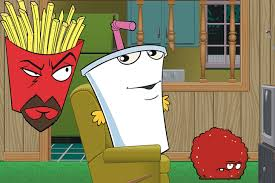
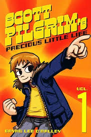

A 16 year old highschooler born in Indiana. He is half black and half Korean and has no siblings. In the future he wishes
to graduate from NYU with a computer science degree, and work as a game developer after college.
His Hobbies
Drawing
Programming
Gaming
Cooking
Making Music
His Favorites
Favorite TV Show: Aqua Teen Hunger Force

Favorite Movie: Scott Pilgrim

Favorite Food: Rice
Favorite Artist: Yoji Shinkawa
FUN FACTS ABOUT JOSH
He is a member of Warren Central's Student Council
He plays the piano
His favorite music genres are Future Funk and Techno